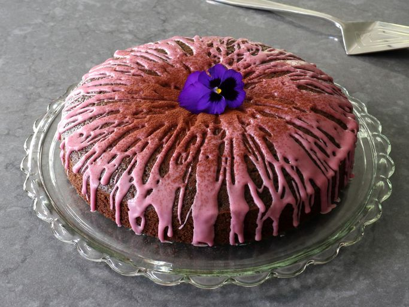

Mulled Wine Cake

This mulled wine cake, wonderfully tender and moist, begins with a dead simple cake batter. Mulled wine—which goes into the batter, the icing, and an optional mulled wine syrup— brings an acidity that goes well with warm holiday spices. If you like flavor, and you are a fan of the annual glass of mulled wine, I really think you will love this cake.
This is a great additional to your holiday feast!
Best enjoyed cold
Ingredients
Mulled Wine
- 1 1/4 cups red wine
- 4 whole star anise pods
- 8 whole cloves
- 6 allspice berries
- 2 tablespoons brandy
Cake Batter
- 1 3/4 cups all-purpose flour
- 2 tablespoons cocoa
- teaspoon kosher salt
- 1 teaspoon baking soda
- 1 1/2 teaspoons ground cinnamon
- 1 1/2 teaspoons ground ginger
- 1 pinch cayenne pepper
- 1/2 cup light brown sugar
- 1/2 cup white sugar
- 2 tablespoons orange zest
- 1/2 cup vegetable oil
- 2 large eggs, beaten
- 2/3 cup hot mulled wine
Icing
- 2 cups confectioner's sugar
- 3 to 4 tablespoons cooled mulled wine, or as needed
Directions
- Preheat the oven to 350 degrees F (180 degrees C). Generously oil a 10-inch round cake pan and line the bottom with parchment.
- Combine red wine, star anise, cloves, allspice berries, and brandy in a saucepan, and bring to a simmer over medium heat. Reduce heat to low; simmer gently for 15 minutes. Reserve 2/3 cup hot mulled wine for the cake batter, and set aside the remaining mulled wine to cool completely.
- Whisk together flour, cocoa, salt, baking soda, cinnamon, ginger, cayenne, brown sugar, and white sugar in a bowl. Add zest, oil, and eggs. Use a fork or whisk to stir together until flour disappears.
- Whisk in reserved 2/3 cup hot mulled wine until a smooth, shiny batter forms; transfer into the prepared cake pan. Tap on the counter a few times to release air bubbles.
- Bake in the preheated oven for 25 to 30 minutes, but begin checking for doneness at 25 minutes. A toothpick inserted near the center should come out virtually clean. The cake may take a few minutes longer, depending on your oven.
- Cool cake in the pan on a wire rack for 20 minutes, then turn the cake out of the pan and remove the parchment. Cool cake completely on the wire rack.
- Whisk confectioner’s sugar with 3 to 4 tablespoons cooled mulled wine together in a small bowl until you have a smooth, pourable icing. If icing is too thin, add a little more confectioner’s sugar; if too thick, add a little more wine. Drizzle icing over the cake using the whisk, waving it back and forth and letting the icing fall onto the cake in any pattern you want.
- ENJOY
Return to top
Return to main page